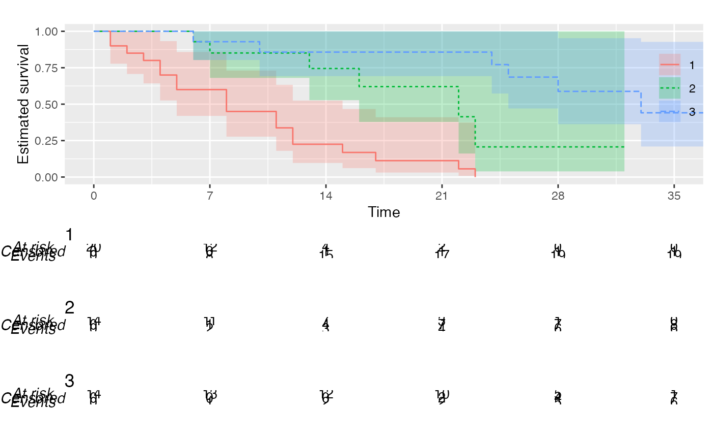

Produce Kaplan–Meier plots in the style recommended following the KMunicate study by TP Morris et al. (doi: 10.1136/bmjopen-2019-030215 ).
KMunicate( fit, time_scale, .risk_table = "KMunicate", .reverse = FALSE, .theme = NULL, .color_scale = NULL, .fill_scale = NULL, .xlab = "Time", .ylab = ifelse(.reverse, "Estimated (1 - survival)", "Estimated survival"), .alpha = 0.25, .rel_heights = NULL, .ff = NULL, .risk_table_base_size = 11 )
| fit | A |
|---|---|
| time_scale | The time scale that will be used for the x-axis and for the summary tables. |
| .risk_table | This arguments define the type of risk table that is produced. |
| .reverse | If |
| .theme |
|
| .color_scale | Colour scale used for the plot. Has to be a |
| .fill_scale | Fill scale used for the plot. Has to be a |
| .xlab | Label for the horizontal axis, defaults to Time. |
| .ylab | Label for the vertical axis, defaults to Estimated survival if |
| .alpha | Transparency of the point-wise confidence intervals |
| .rel_heights | Override default relative heights of plots and tables. Must be a numeric vector of length equal 1 + 1 per each arm in the Kaplan-Meier plot. See |
| .ff | A string used to define a base font for the plot. |
| .risk_table_base_size | Base font size for the risk table, given in pts. Defaults to 11. |
A KMunicate-style ggplot object.
library(survival) data("cancer2", package = "KMunicate") KM <- survfit(Surv(studytime, died) ~ drug, data = cancer2) time_scale <- seq(0, max(cancer2$studytime), by = 7) KMunicate(fit = KM, time_scale = time_scale)